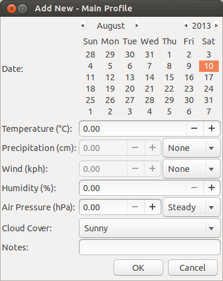
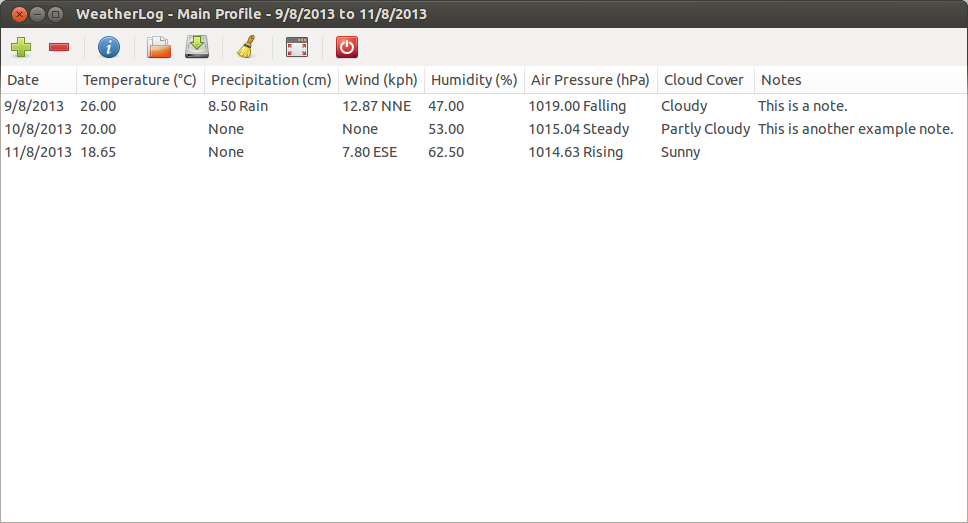
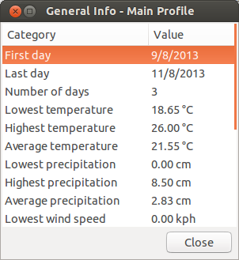
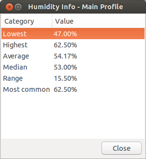
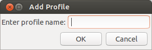
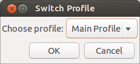
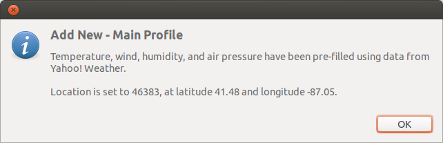

1. Basics
The first time you start WeatherLog you will be presented with a basic interface that should look similar to this:

No data is shown, just a couple menus, a toolbar, and the column titles. To add data, click the button with the plus sign on the toolbar. Alternatively, you can also select the Add New option in the File menu or press Control-N. This will show the Add New window.

All entries are required, except for the notes. Precipitation and wind values cannot be changed unless the type/direction is set to something other than "None".
If you want to delete a row of data, simply select it and choose Remove from the Weather menu, or press the toolbar button with the minus sign.
(Back to top)
2. Getting Information
After you have a few days of data entered, the program should look something like this (though this is all just example data):

This isn't really useful, though. You already know the data, so what's the point of entering it into the program when you could have just kept track of it on paper? WeatherLog isn't completely useless, however, as it can tell you info about the weather data.
Clicking on the toolbar button with the letter "i" on it will show a window with info about the data (selecting Info from the Weather menu or pressing Control-I will work as well):

Here you can see an overview of the info. But what if you need something more specific that isn't shown here? You can also see information about each column by going into the More Info submenu in the Weather menu, or by pressing the appropriate key combination:

Each window will show different types of information, depending on the column.
If you want to store this data, click on the Export button to export the data to an HTML file.
(Back to top)
3. Importing and Exporting
WeatherLog can also import and export data. These are useful for backup or sharing with other people. To export data, either click the save button on the toolbar, select Export from the Weather menu, or press Control-S. Importing data is just as simple; click the open button in the toolbar, select Import from the Weather menu, or press Control-O. Import as New Profile, in the same menu, is slightly different; it will import data in a new profile, instead of in the current one. See the next section for more details on profiles.
However, these are only really useful if the only application you want to use this data with is WeatherLog. That's why there are two more options, for exporting data to HTML or CSV. Export to HTML, available from the Weather -> Export to menu, formats the data into a table that can be viewed in a web browser. Export to CSV, in the same menu, formats the data as CSV (comma-separated values) for use in a spreadsheet program. If you want to easily share the data with others, you can also export the data to Pastebin, as either raw data or formatted as HTML or CSV.
(Back to top)
4. Profiles
If you want to have multiple lists of data, you can use profiles to easily edit and keep track of them.
To add a profile, select Add Profile from the Profiles menu or press Control-Shift-N. You will be presented with a window to enter the profile name in:

You will automatically switch to the new profile. If you want to go back to the previous one, the Switch Profile window (accessible from the Profiles menu, or by pressing Control-Shift-S) allows you to choose from the existing profiles.

If you created a profile you no longer want, you can delete it from the Remove Profile window, available from the Profiles menu or by pressing Control-Shift-D. Note that you cannot delete the current profile.
(Back to top)
5. Clearing Data
If you decide you want to start over, choosing Clear Current Data from the Weather menu will delete the data in the current profile. Make sure you want to do this first, as it cannot be reversed unless you have backed up the data.
If you want to delete all the data, you can choose Clear All Data, also located in the Weather menu. This will remove all profiles, as well as any other data files used.
(Back to top)
6. Pre-filling Data
WeatherLog can pre-fill some data, to make it easier to enter. To enable pre-filling, select Options from the Options menu, or press F2. Then make sure the checkbox next to "Pre-fill data" is selected, and enter a five digit US zip code into the location entry.

Next time you open up the Add New window, this will appear to tell you data has been pre-filled:

The temperature, wind, humidity, and air pressure fields will then have the correct data already entered, though cloud cover and precipitation still have to be entered manually.
Currently pre-filling data only works in the United States using the Yahoo! Weather API; in the future it will be available worldwide through a choice of different services.
(Back to top)